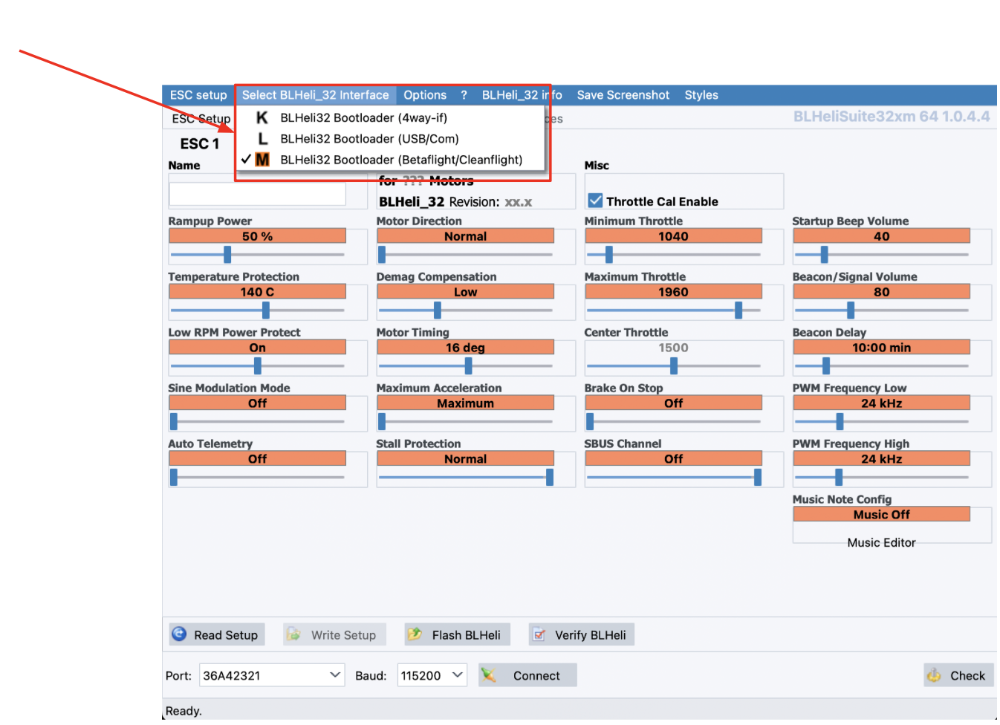
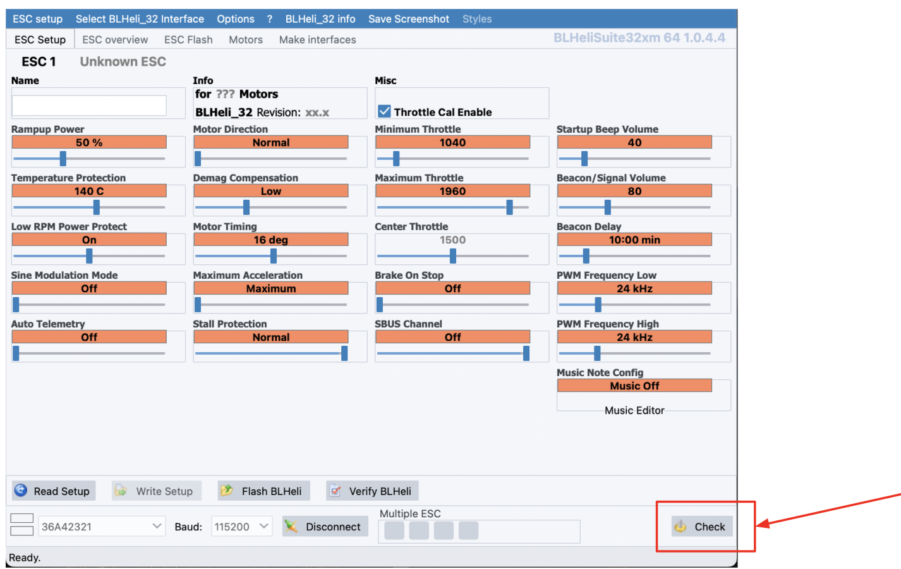
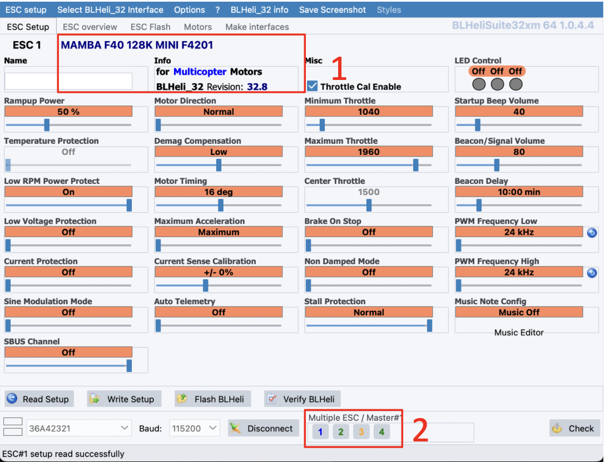
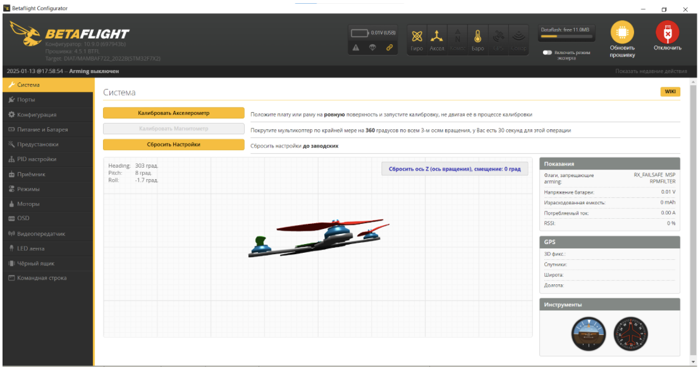
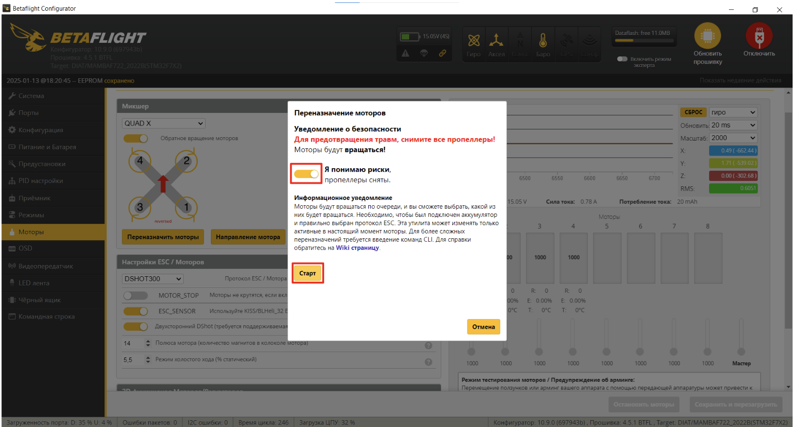
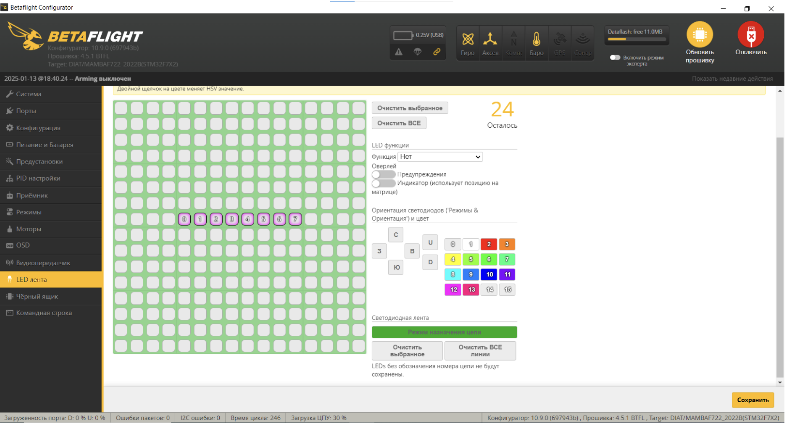
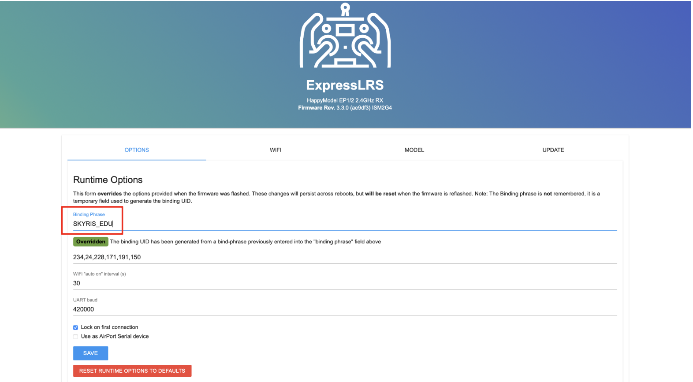

Настройка
Все инструкции по настройке носят рекомендательный характер. Вы можете использовать свои настройки или скачать готовый конфигурационный файл.
ШАГ 1. Настройка регулятора 4в1
1.1 Устновка BLHeliSuite32
Скачайте и установите приложение BLHeliSuite32 с Gitghub.
Ссылка для скачивания BLHeliSuite32: https://github.com/bitdump/BLHeli/releases
1.2 Подключение регулятора 4в1 на ПК
Запустите BLHeliSuite32

Подключите АКБ к Регулятору 4в1
Подключите полетный контроллер к ПК используя кабель USB

Нажмите кнопку “Connect”

Нажмите кнопку “Check”

Программа BLHeli_32 определит модель Регулятора, версию прошивки и каждый из 4-х каналов

Измените значение PWM Frequency High с 24kHz на 48kHz
Измените значение PWM Frequency Low с 24kHz на 48kHz

После успешной заливки параметров вы увидите окно “Multiple ESC Write seccessfull”

Перейдите в раздел “ESC overview” и убедитесь, что параметры “ESC Frequency” записались во все 4 регулятора

ШАГ 2. Прошивка полетного контроллера
2.1 Установка ПО
Скачайте или откройте веб версию. Веб-версия доступна только в браузерах на базе Сhromium (Chrome, Chromium, Edge) и Яндекс Браузере.
- Ссылка для скачивания Betaflight configurator: https://github.com/betaflight/betaflight-configurator/releases
- Веб версия Betaflight configurator: https://app.betaflight.com/
2.2 Подключение полетного контроллера к ПК
Запустите Betaflight Configurator

Подключите полетный контроллер к ПК используя кабель USB

2.3 Обновление прошивки FC
- Нажмите кнопку “Обновить прошивку”
- Нажмите кнопку “Автоопределение” (должен определиться FC “MAMBAF722_2022B”)
- Если FC не определился или определился некорректно - выберите “MAMBAF722_2022B” вручную

- В разделе “Прочие настройки” уберите пункт “OSD (Digital)”

- Нажмите “Загрузить прошивку [Online]”
- Затем нажмите “Прошить прошивку” -> “Игнорировать риск”

2.4 Калибровка акселерометра
- Разместите квадрокоптер на ровной горизонтальной поверхности/столе.
- Убедитесь, что нижняя площадка плотно прилегает к плоскости стола (ремешок может мешать на время калибровки рекомендуется оставить его в расстегнутом состоянии)
- Перейдите в раздел "Система" и нажмите кнопку “Калибровать Акселерометр”

- Убедитесь, что UART порты назначены, как показано на скриншоте, установите в UART3 параметр VTX (IRC Tramp)
- Нажмите кнопку “Сохранить и перезагрузить”

2.5 Настройка каналов
Перейдите на вкладку “Режимы”
.Установите ARM на AUX1:
- Нажмите “Добавить диапазон”
- Выберите AUX1
Остальные режимы вы можете настроить под свои задачи (например, переключение режимов)- для этого нажмите кнопку “Добавить диапазон” и выберите необходимый стик на пульте

2.6 Настройка моторов
- Перейдите на вкладку “Моторы”
- В строке “Протокол ESC” выберите “DSHOT300”
- Включите “Двухсторонний DShot”
- Измените “Количество полюсов магнитов” до 12
- Для проверки корректности направления вращения моторов нажмите “Переназначить моторы”

- Убедитесь, что пропеллеры сняты, поставьте галочку в пункте “Я понимаю риски”
- Подключите АКБ к гнезду XT-30 (после должна будет проиграть звуковая индикация моторов)
- Нажмите “Старт”

- Поочередно проверьте, что моторы вращаются в соответствии со схемой - следуйте инструкциям программы
- Проверьте еще раз порядок вращение двигателей и нажмите кнопку “Сохранить”

- Нажмите “Направление мотора”

- В открывшемся окне выберете пункт “Индивидуально ”

- Поочередно проверьте корректность направления вращения каждого мотора нажав на кнопки с номерами моторов - они должны вращаться в соответствии с иллюстрацией
- Если вращение мотора не совпадает, нажмите “Обратный”
- По завершении проверки нажмите “Закрыть”

2.7 Настройка PID
- Перейдите на вкладку “PID настройки”
- В разделе “Настройка профилей PID” измените значения:

- Перейдите в раздел “Настройки фильтров”
- Отключите фильтр низких частот гироскопа “Lowpass”
- Измените значения “Минимальной частоты Gyro RPM фильтра” до 150Hz

2.8 Настройка OSD
Перейдите на вкладку “OSD”
- В левой части интерфейса в столбце “Профиль 1” проставьте галочки в пунктах: “Значения dBm RSSI”, “Значения RSSI”, “Израсходованная емкость батареи (mAh), “Качество подключения”, “Напряжение батареи”, “ Предупреждения”, “Таймер 1”, “Таймере 2”.
- Описание: Таймер 1 и Таймер 2 (первый показывает сколько времени дрон включен, второй - сколько он в arm)

2.9 Настройка рабочих частот
Скачайте файл
Перейдите на вкладку “Видеопередатчик”

Нажмите “Загрузить из файла” в нижней части интерфейса
Выберите скачанный ранее файл
Нажмите “Сохранить”

2.10 Настройка LED-модулей
Перейдите на вкладку “LED лента”
- Нажмите “Режим назначения цепи”

- Выделите на панели со светодиодами 8 ячеек, как показано на скриншоте (обратите внимание, что нумерация начинается с нуля)
- Нажмите кнопку “Сохранить”

- Еще раз выделите выбранные ранее ячейки
- В разделе LED функции установите функцию “Арм состояние”
- В разделе Изменение цвета активируйте пункт “AUX 1”
- В группе настроек “Специальные цвета” нажмите “Disarmed” и выберите цвет, который будет отображать индикацию при дизарме, аналогично задайте цвет, который будет отображать режим арм (через кнопку “Включен”)
- Нажмите кнопку “Сохранить”

ШАГ 3. Бинд приемника к пульту РУ (WiFi)
3.1 Первичная настройка приемника
Скачайте файл с прошивкой для приемника
- Подключите полетный контроллер к ПК по USB
- Дождитесь когда приемник перейдет в режим “WiFi” (Примерно через 1 мин после подачи питания, приемник начнет быстро мигать зеленым светодиодом)
- Подключитесь к приемнику как к точке доступа WiFi:
- Сеть: ExpressLRS RX
- пароль: expresslrs
- В окне браузера введите адрес 10.0.0.1

Перейдите на вкладку “Update”
- Выберите скачанный ранее файл с прошивкой
- Нажмите кнопку “Update” - приемник обновит прошивку и перезагрузится
- Повторно подключитесь к приемнику по WIFI и запустите окно настроек в браузере (пункты 4 и 5)
Перейдите на вкладку “Options”
- В строке “Binding phrase” введите фразу (любое сообщение: не менее 6 символов, латинские буквы, заглавные буквы, спец. знаки, цифры)
- Нажмите кнопку “SAVE”

3.2 Настройка пульта РУ
- Скачайте файл с прошивкой для пульта
- Включите пульт РУ зажав кнопку “Power”
- Перейдите в меню нажав кнопку “SYS”
- Далее в меню ExpressLRS ⭢ WiFi Connectivity ⭢Enable WiFi (для навигации по меню используйте кнопку “Menu”)
- Далее нажмите “Enter”

После появления индикации “WiFi Running” пульт запустит точку доступа с названием “ExpressLRS TX”
Повторите пункты 4-12 из главы с настройкой приемника. При выборе прошивки загрузите файл “Название файла”, а в поле “Binding phrase” введите ту же фразу, которую вводили при настройке приемника

3.3 Настройка приемника в BetaFlight

- Включите пульт РУ зажав кнопку “Power” (важно сначала включить пульт, а потом приемник т.к. при отсутствии сигнала пульта в течение 1 минуты приемник переходит в режим настройки)
- Подайте питание на приемник (подключить полетный контроллер к ПК по USB)
- Запустите Betaflight Configurator
- Перейдите в вкладку “Приемник”
- Проверьте, что FC распознает сигналы с пульта РУ
Поочередно отклоните левый и правый стик в крайние положения
- при отклонение левого стика вниз-вверх (YAW) - ползунок Throttle (T) начнет двигаться влево-вправо при отклонение стика вниз-вверх соответсвенно
- при отклонение левого стика влево-вправо (YAW) - анимация дрона в окне настройки должна начать вращаться в горизонтальной плоскости против часовой и по часовой стрелке соответственно
- при отклонении правого стика влево-вправо (ROLL) анимация дрона в окне настройки должна начать вращаться влево или вправо соответственно
- при отклонении правого стика ввех-вних (PITCH) анимация дрона в окне настройки